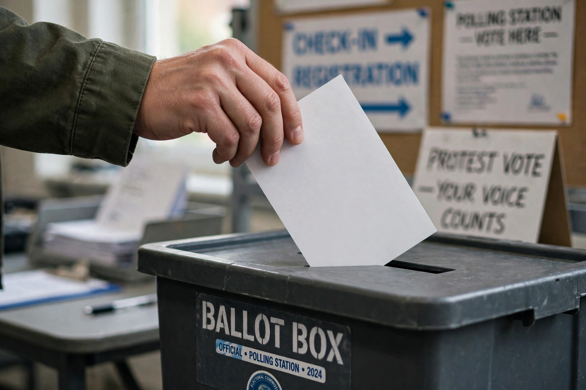

A protest vote is a vote cast in an election to demonstrate dissatisfaction with the candidates, parties, or political system on offer, rather than sincere support for the option chosen. Forms include voting for a minor or joke candidate, casting a blank or spoiled ballot, or voting "none of the above" where that option exists.

Protest voting can signal alienation and pressure major parties, but critics note it can enable disliked outcomes by withholding support from mainstream alternatives. Some jurisdictions formally count blank votes (as in Colombia, where a majority blank vote can force a repeat election with new candidates) or offer NOTA (India since 2013). Protest votes are often linked to political polarization and populist movements.